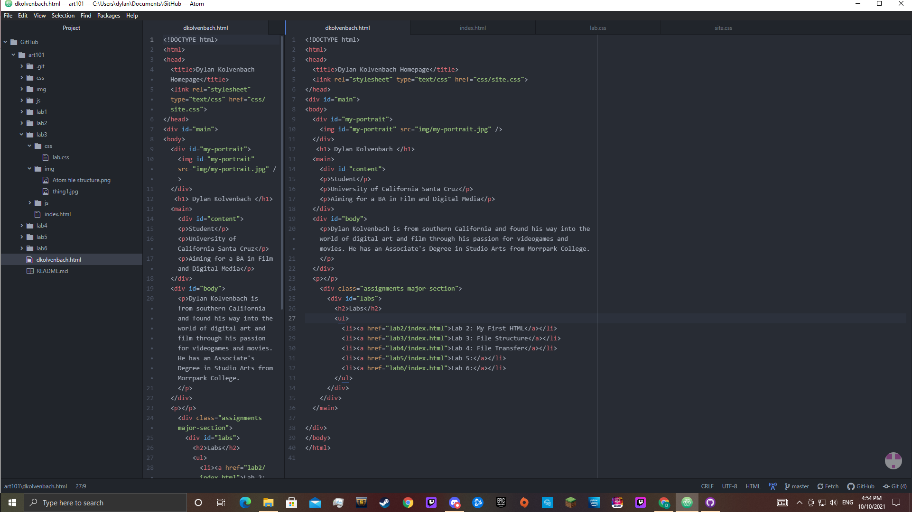

Lab 3:File Structure
Subject
This lab holds the purpose of showing us how to link sibling files together. This allows us to click on an in-browser link to access those files and view them instantly as opposed to opening a separate window. This lab also demonstartes the importance of having your files in the right place so each web page works as intended with the correct style and content.
Challenges
The main challenge I faced when completing this lab was setting up the CSS file to stylize my webpage.
Results
What you are looking at is the result of my efforts. Below is an image of the file structure I used organize my projects to be able to link them up easily and work on them without getting lost. (Thanks Wes for the premade structure!)
